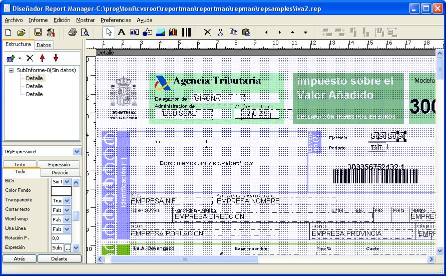
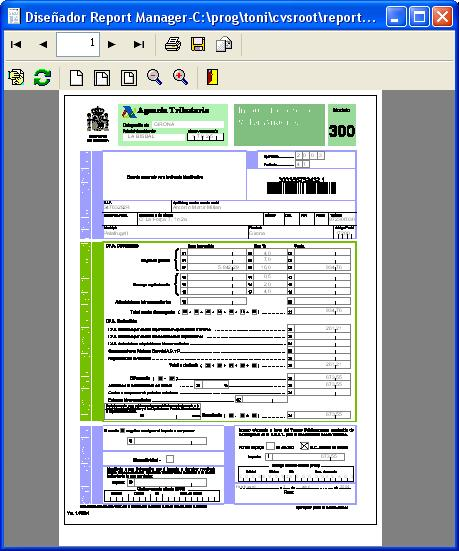

This is a small guide to perform preprinted form filling. Usually you have a form, in printed format, or pdf and you want to fill values in boxes provided by this form.
The background image will be placed in one section of our report so we can place items, expressions, labels on top of it.
If the form is already printed, you should use a image scanner to obtain the background image, check the dots per inch property of the scanner, you will place the same value in dpi property in the section you place the image.
If the form is provided as pdf you should use a tool to convert it to a image file, each page must be a separate image file, you will get a good result using Adobe Acrobat 6 professional.
Usually the best image format for the background image is a Windows Bitmap format, 8 bit color depth (indexed), if the report have the property prefered save format set to binary/zlib, the bitmap will be stored in compressed format, make sure to check this property before adding the background images.
If the images are real life photos the best compression can be acchieved with jpeg format.
After setting the background image property, you can drag & drop fields on top of the image, the background image can appear also in preview or also printed, checking the background style. You should set page margins to 0 if you scanned or exported the whole image.
Here is a sample:

By adjusting margins you can adjust output, if your want to print also the background you don't need adjustments.
A sample result:

This sample report is also configured to generate a custom text output to be used to pay to Agencia Tributaria (Spain) using Internet method ("presentación telemática").